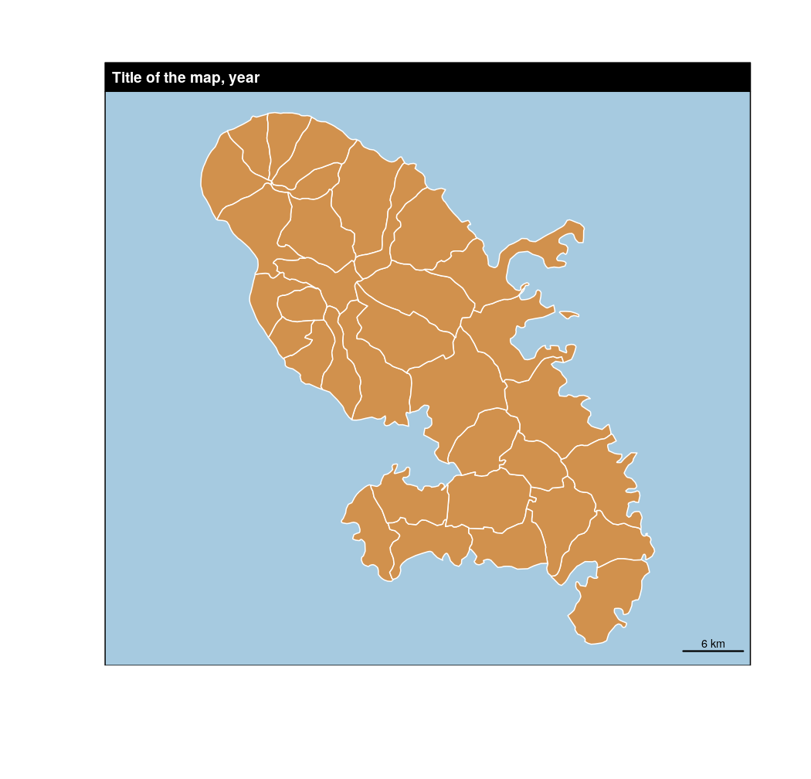
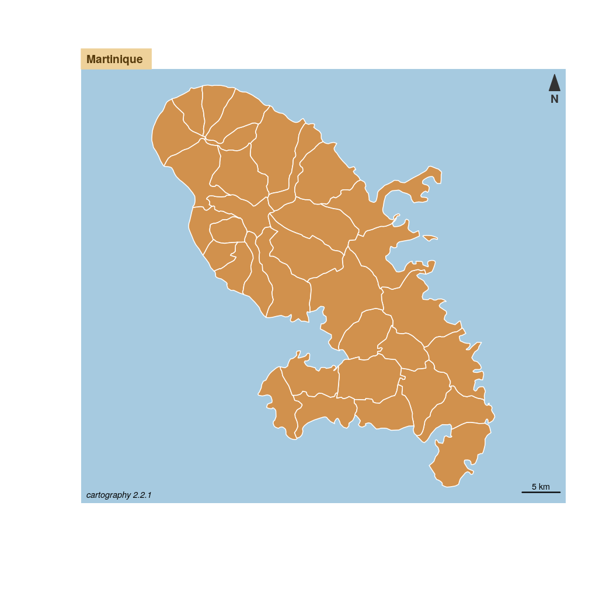

Plot a layout layer.
layoutLayer(title = "Title of the map, year", sources = "", author = "", horiz = TRUE, col = "black", coltitle = "white", theme = NULL, bg = NULL, scale = "auto", posscale = "bottomright", frame = TRUE, north = FALSE, south = FALSE, extent = NULL, tabtitle = FALSE, postitle = "left")
| title | title of the map. |
|---|---|
| sources | sources of the map (or something else). |
| author | author of the map (or something else). |
| horiz | orientation of sources and author. TRUE for horizontal display on the bottom left corner, FALSE for vertical display on the bottom right corner. |
| col | color of the title box and frame border. |
| coltitle | color of the title. |
| theme | name of a cartographic palette (see carto.pal.info). col and coltitle are set according to the chosen palette. |
| bg | color of the frame background. |
| scale | size of the scale bar in kilometers. If set to FALSE, no scale bar is displayed, if set to "auto" an automatic size is used (1/10 of the map width). |
| posscale | position of the scale, can be "bottomright", "bottomleft" or a vector of two coordinates (c(x, y)) |
| frame | whether displaying a frame (TRUE) or not (FALSE). |
| north | whether displaying a North arrow (TRUE) or not (FALSE). |
| south | whether displaying a South arrow (TRUE) or not (FALSE). |
| extent | sf object or Spatial*DataFrame; sets the extent of the frame to the one of a spatial object. (optional) |
| tabtitle | size of the title box either a full banner (FALSE) or a "tab" (TRUE). |
| postitle | position of the title, one of "left", "center", "right". |
If extent is not set, plot.new has to be called first.
The size of the title box in layoutLayer is fixed to 1.2 lines height.
#> Reading layer `mtq' from data source `/home/tim/Documents/pkg/cartography/inst/gpkg/mtq.gpkg' using driver `GPKG' #> Simple feature collection with 34 features and 7 fields #> geometry type: MULTIPOLYGON #> dimension: XY #> bbox: xmin: 690574 ymin: 1592536 xmax: 735940.2 ymax: 1645660 #> epsg (SRID): 32620 #> proj4string: +proj=utm +zone=20 +datum=WGS84 +units=m +no_defs# Layout plot layoutLayer()# Layout plot layoutLayer(title = "Martinique", author = paste0("cartography ", packageVersion("cartography")), tabtitle = TRUE, scale = 5, north = TRUE, frame = FALSE, theme = "sand.pal")